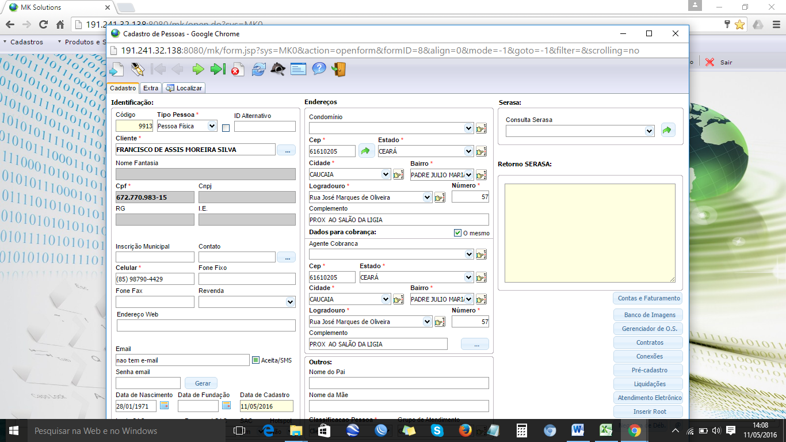
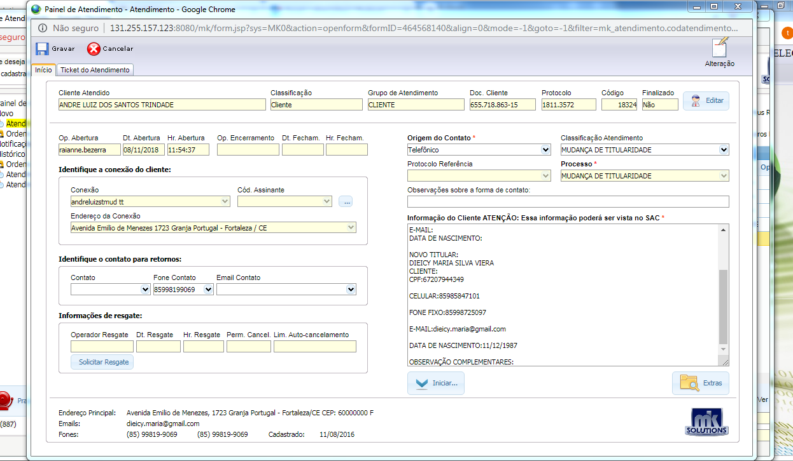
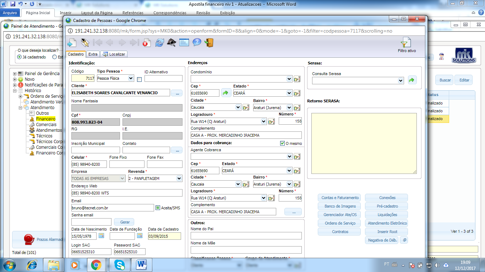
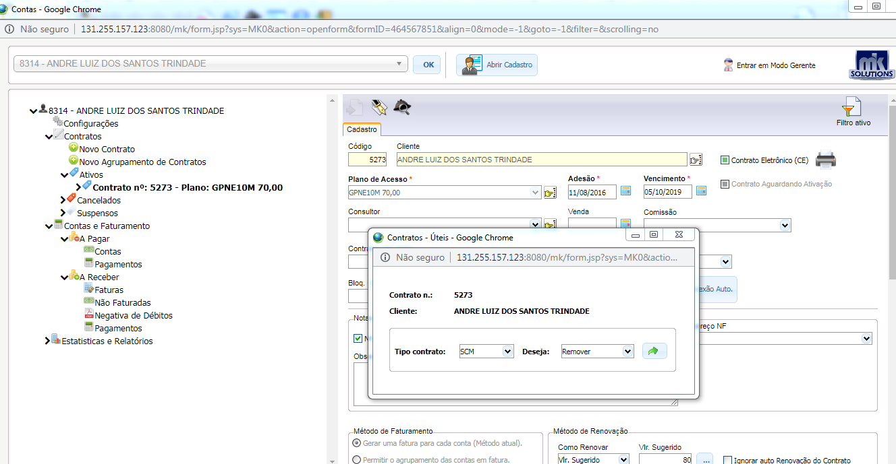
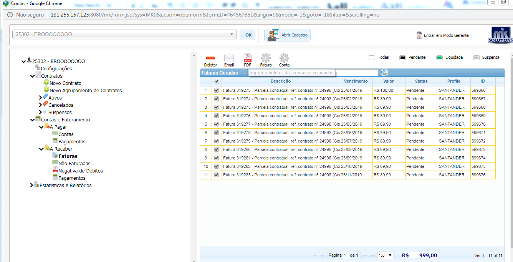
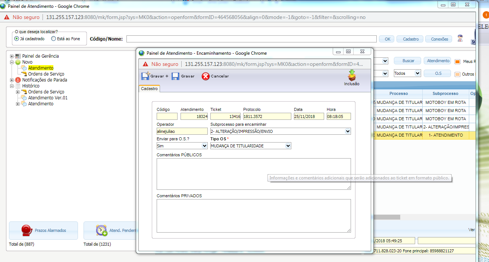
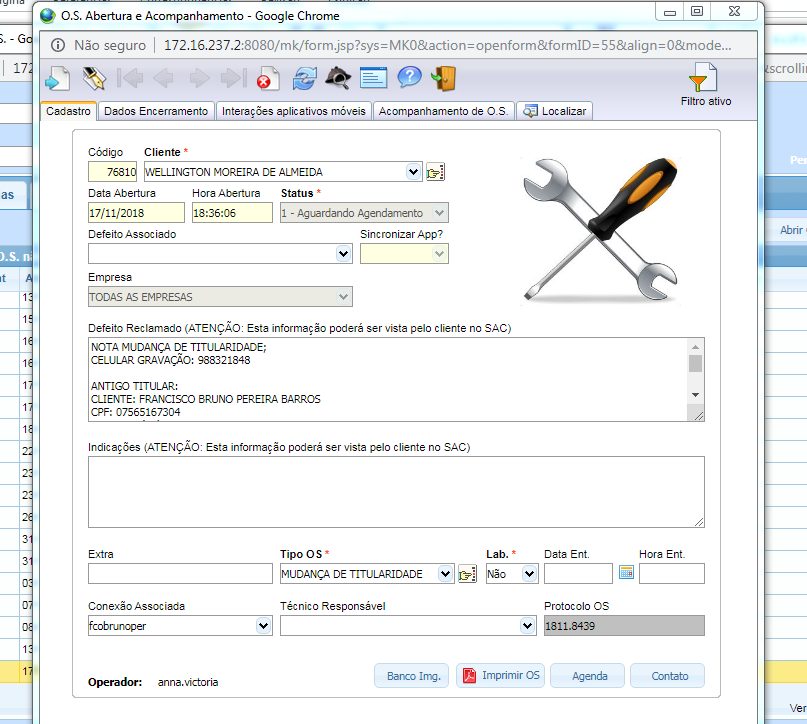
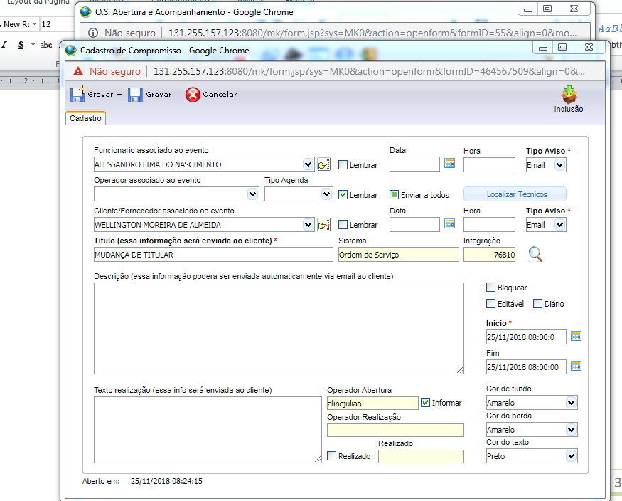

- Qual Endereço e cep ?
- telefones para contato ( Obs.: Atualizar os números )
- Qual watsap ?
- Qual o e-mail ? (Obs.: Atualizar e-mail ou colocar não tem)

Mudança de titularidade
Fazer as seguintes verificações:
- Verificar se tem ticket aberto para esse cliente; Na aba painel de atendimento/ Atendimento/ histórico /Atendimento.
- Verificar se tem O.S aberta para esse cliente; Na aba painel de atendimento/ Atendimento/ histórico /Ordens de serviço.
No caso de O.S aberta informar ao cliente para aguardar atendimento.
- Verificar pendências financeiras: Na aba Financeiro / Painel Contas e faturamentos
No casso de pendencias informar o cliente, que a alteração só poderá ser feita após o pagamento do debito e com o titular.
IMPORTANTE:
- Verificar o motivo da mudança de titularidade.
- Informar que será feito uma consulta no spc, se houver restrição de débitos, não será possível fazer alteração para esse cpf,, tendo assim que informar um outro sem restrição.
- O Limite máximo de consulta e 2 por cliente por 6 meses.
- Informar CPF de o novo titular e data de nascimento
- Informar da taxa de R$ 10,00 que devera ser paga no ato da assinatura do contrato.
- Informar ao cliente que será feito alteração do contrato e do carne, e no prazo máximo de 24hs uteis, o motoqueiro ira levar a documentação para assinar. o novo titular terá que esta com uma xerox da identidade ou habilitação e no local para assinar o contrato.
Abertura do ticket:
Após essas verificações, selecionar a aba novo e preencher os campos no painel de atendimento:
Origem do contato= telefônico
Processo = Mudança de titularidade
Informação do cliente= Relatar a solicitação do cliente, o plano de acesso, valor e forma de envio Gravar e Iniciar.
- Encaminhar o ticket para o sub processo Executar/Alteração/Impressão/Envio

- Finalizar o atendimento e Informar ao cliente que será feito as verificações e que a empresa entrara em contato para agendar a assinatura do contrato e entrega do novo carnê.
Fazer a consulta do SPC antes iniciar qualquer alteração, se o cliente novo não tiver nenhuma restrição, fazer a impressão da consulta para anexar o contrato.
Se nas duas consultas apresentar restrição nos 2 CPFs, encaminhar o ticket para o sub processo \ Não alterado barrado SPC e informar ao cliente sobre a pendencia.
Encerrar o ticket
Alterar dados Cadastrais.
- No painel de atendimento clicar na aba editar/cadastro de pessoas, seleciona a aba editar. Altera as informações do cadastro e gravar

Imprimir Contrato Alterado
- Acessar o painel de contas e faturamentos, Clica em cima da imagem impressora, Tipo contrato/ SCM, Deseja/ Remover, clica na seta verde a direita. Após esse processo, o contrato será atualizado
- Seleciona novamente da imagem impressora, Tipo contrato/ SCM, Deseja/ Editar/Emitir, clica na seta verde a direita

- Imprimir o Contrato Atualizado para juntar com a consulta do SPC
Procedimentos de envio por motoqueiro
Seleciona as faturas alteradas, clica na opção PDF ,baixa e imprimi.
Faz a impressão do boleto

Encaminhar o Ticket para O.S.
- No painel de atendimento clicar na aba editar/Ticket de atendimento / Encaminhar / Enviar para O.S sim/ Tipo de O.S Mudança de Titularidade e Gravar

- Preencher as seguintes informações: em defeito reclamado/ Relatar a solicitação do cliente ,motivo da alteração, cpf e data de nascimento do novo titular ,telefone, e-mail e R$ da mudança. Preencher os mesmo dados também do titular atual, prazo de 24hs,cliente ciente que deve entregar o antigo carne ao motoqueiro, tipo de O.S /Mudança de Titularidade, Data Ent/ atual , Hora Ent / atual e Gravar

Fazer a impressão da O.S e anexar ao carnê impresso.
Fazer o agendamento
- Em funcionário Associado ao evento/ nome do Técnico, em Titulo/ apagar o nome do cliente e colocar a descrição/ Mudança de Titularidade/ Desmarcar os campos bloquear e Editável, Inicio / data e hora atual, Cor fundo e borda/ Amarelo, cor de texto/ preto e gravar

Encerrar o ticket
- Na aba painel de atendimento/ Seleciona a aba Ticket de atendimento, clica em encerrar, coloca o comentário do atendimento em comentários públicos e Confirmar o encerramento.

- Voltar